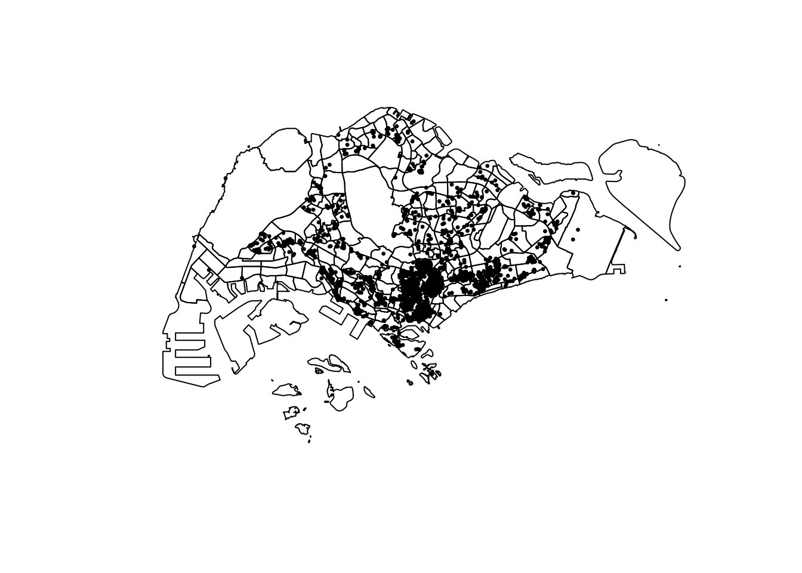
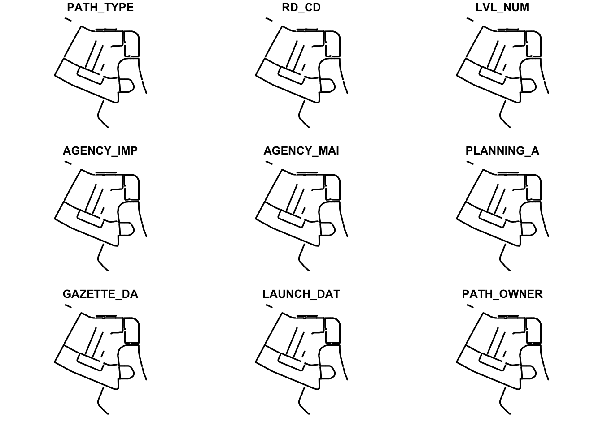
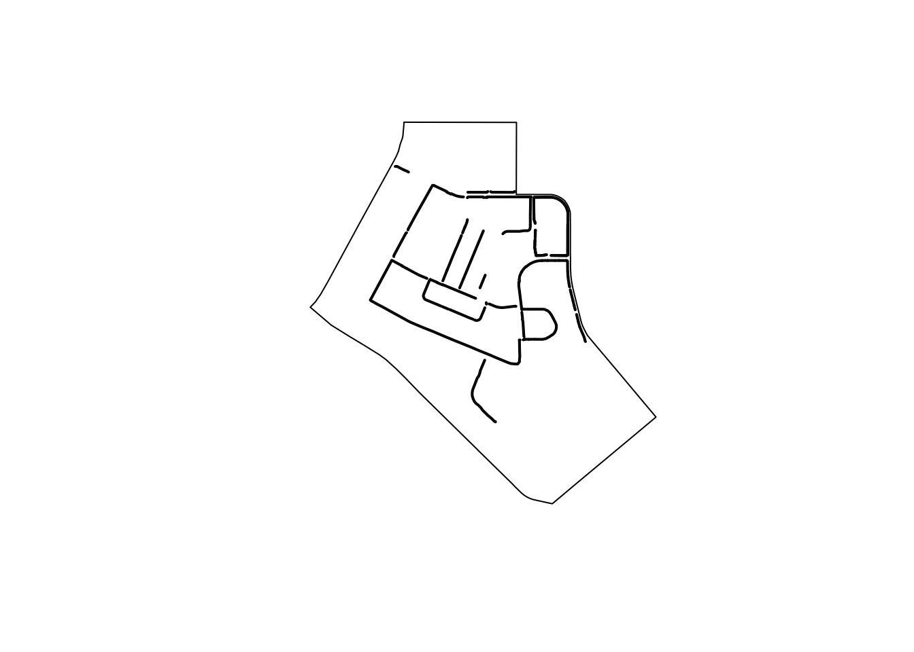
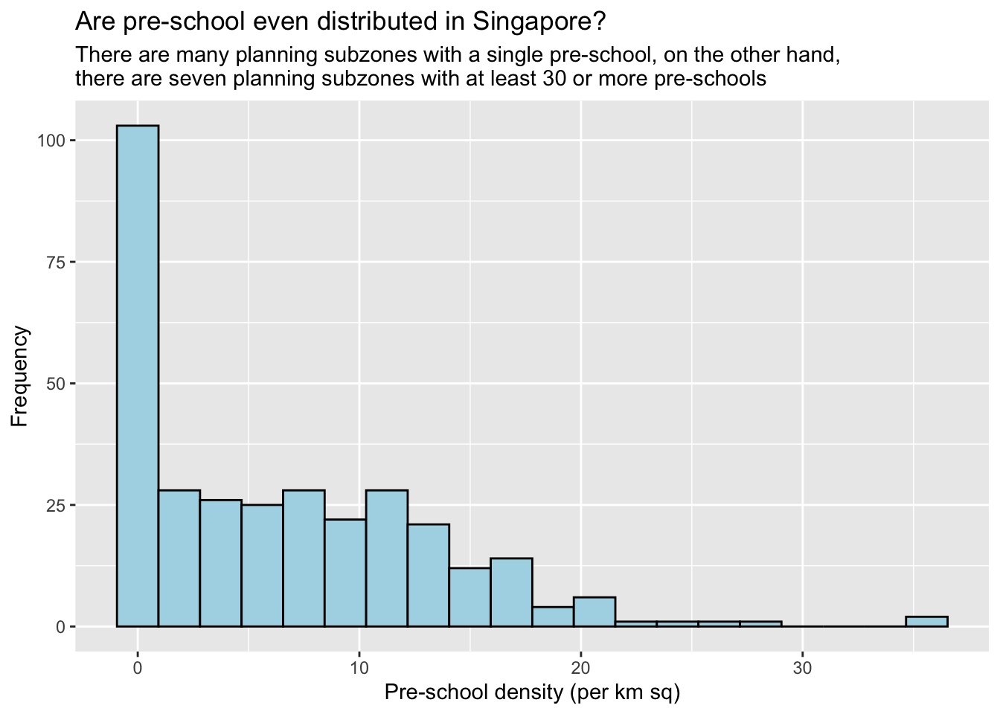

pacman::p_load(sf, tidyverse)Hands-on Exercise 01
1 Geospatial Data Science with R
1.1 Learning Outcome
By the end of this hands-on, I should be able to:
Import and manage geospatial and aspatial datasets in R.
Explore and check simple feature data frames using Base R and sf functions.
Assign and transform coordinate systems.
Perform data wrangling with dplyr.
Carry out basic exploratory data analysis (EDA) with ggplot2.
1.2 Data Preparation
In this exercise, the first step is to set up a clear folder structure for the project. A main folder (Hands-on_Ex) is created with a subfolder for the exercise (Hands-on_Ex01). Inside it, a data directory is organized into two parts:
Geospatial data: contains shapefiles such as the 2014 Subzone Boundary, Pre-Schools Location, and Cycling Path.
Aspatial data: contains tabular data, specifically the Airbnb listing dataset (
listing.csv).
This organization ensures that both spatial and non-spatial datasets are properly separated and ready to be used in R for analysis.
1.3 Getting Started
This exercise begins by setting up the essential R packages:
sf – for importing, managing, and processing geospatial data.
tidyverse – for data wrangling and visualization. Specifically, it uses:
readr (CSV import),
tidyr (data manipulation),
dplyr (data transformation),
ggplot2 (visualization).
To load them efficiently, the pacman package is used with p_load(), which installs and loads the required packages into R in one step.
1.4 Importing Geospatial Data
In this section, you will learn how to import the following geospatial data into R by using st_read() of sf package:
MP14_SUBZONE_WEB_PL, a polygon feature layer in ESRI shapefile format,CyclingPath, a line feature layer in ESRI shapefile format, andPreSchool, a point feature layer in kml file format.
1.4.1 Importing polygon feature data in shapefile format
Key Points：
dsnmust point to the correct folderdsnshould be the path to the folder that contains the.shp,.dbf,.prj, and.shxfiles.- If you only write
dsn = "geospatial/"but the files are still inside another subfolder (e.g.,MasterPlan2014SubzoneBoundaryWebSHP/), you’ll get the error “file doesn’t seem to exist”.
layermust match the shapefile name- If the shapefile is
MP14_SUBZONE_WEB_PL.shp, then uselayer = "MP14_SUBZONE_WEB_PL". - Do not include the
.shpextension.
- If the shapefile is
- Organize your files properly
- In the course material, the example works directly because all shapefile components are already placed inside the
geospatial/folder. - If your files are still inside a nested folder, you need to either:
- adjust the
dsnto point to that subfolder, or - move the
.shp/.dbf/.prj/.shxfiles directly intogeospatial/.
- adjust the
- In the course material, the example works directly because all shapefile components are already placed inside the
mpsz <- st_read(
dsn = "data/geospatial/MasterPlan2014SubzoneBoundaryWebSHP",
layer = "MP14_SUBZONE_WEB_PL"
)Reading layer `MP14_SUBZONE_WEB_PL' from data source
`/Users/geloliu/Gelo-BingBing/ISSS626-GAA/Hands-on_Ex/Hands-on_Ex01/data/geospatial/MasterPlan2014SubzoneBoundaryWebSHP'
using driver `ESRI Shapefile'
Simple feature collection with 323 features and 15 fields
Geometry type: MULTIPOLYGON
Dimension: XY
Bounding box: xmin: 2667.538 ymin: 15748.72 xmax: 56396.44 ymax: 50256.33
Projected CRS: SVY21When using st_read(), always check that your dsn points to the exact folder where the shapefile components are stored, and that the layer matches the shapefile name (without extension). A clean folder structure avoids errors and makes your code simpler.
1.4.2 Importing polyline feature data in shapefile form
The code chunk below uses st_read() function of sf package to import CyclingPath shapefile into R as line feature data frame.
cyclingpath = st_read(dsn = "data/geospatial/CyclingPath_Apr2025", layer = "CyclingPathGazette")Reading layer `CyclingPathGazette' from data source
`/Users/geloliu/Gelo-BingBing/ISSS626-GAA/Hands-on_Ex/Hands-on_Ex01/data/geospatial/CyclingPath_Apr2025'
using driver `ESRI Shapefile'
Simple feature collection with 4651 features and 19 fields
Geometry type: MULTILINESTRING
Dimension: XY
Bounding box: xmin: 11721.1 ymin: 27550.13 xmax: 42809.37 ymax: 49702.59
Projected CRS: SVY211.4.3 Importing GIS data in kml format
The PreSchoolsLocation is in kml format. The code chunk below will be used to import the kml into R.
preschool = st_read("data/geospatial/PreSchoolsLocation.kml")Reading layer `PRESCHOOLS_LOCATION' from data source
`/Users/geloliu/Gelo-BingBing/ISSS626-GAA/Hands-on_Ex/Hands-on_Ex01/data/geospatial/PreSchoolsLocation.kml'
using driver `KML'
Simple feature collection with 2290 features and 2 fields
Geometry type: POINT
Dimension: XYZ
Bounding box: xmin: 103.6878 ymin: 1.247759 xmax: 103.9897 ymax: 1.462134
z_range: zmin: 0 zmax: 0
Geodetic CRS: WGS 841.5 Checking the Content of A Simple Feature Data Frame
💡 First, carefully examine your dataset
1.5.1 Working with st_geometry()
st_geometry(mpsz)Geometry set for 323 features
Geometry type: MULTIPOLYGON
Dimension: XY
Bounding box: xmin: 2667.538 ymin: 15748.72 xmax: 56396.44 ymax: 50256.33
Projected CRS: SVY21
First 5 geometries:MULTIPOLYGON (((31495.56 30140.01, 31980.96 296...MULTIPOLYGON (((29092.28 30021.89, 29119.64 300...MULTIPOLYGON (((29932.33 29879.12, 29947.32 298...MULTIPOLYGON (((27131.28 30059.73, 27088.33 297...MULTIPOLYGON (((26451.03 30396.46, 26440.47 303...⚠️ Notice that the print only displays basic information of the feature class.
1.5.2 Working with glimpse()
Besides the basic geometry, each geospatial dataset also contains attribute information stored in the data frame. To quickly explore these attributes, the glimpse() function from dplyr is very handy:
glimpse(mpsz)Rows: 323
Columns: 16
$ OBJECTID <int> 1, 2, 3, 4, 5, 6, 7, 8, 9, 10, 11, 12, 13, 14, 15, 16, 17, …
$ SUBZONE_NO <int> 1, 1, 3, 8, 3, 7, 9, 2, 13, 7, 12, 6, 1, 5, 1, 1, 3, 2, 2, …
$ SUBZONE_N <chr> "MARINA SOUTH", "PEARL'S HILL", "BOAT QUAY", "HENDERSON HIL…
$ SUBZONE_C <chr> "MSSZ01", "OTSZ01", "SRSZ03", "BMSZ08", "BMSZ03", "BMSZ07",…
$ CA_IND <chr> "Y", "Y", "Y", "N", "N", "N", "N", "Y", "N", "N", "N", "N",…
$ PLN_AREA_N <chr> "MARINA SOUTH", "OUTRAM", "SINGAPORE RIVER", "BUKIT MERAH",…
$ PLN_AREA_C <chr> "MS", "OT", "SR", "BM", "BM", "BM", "BM", "SR", "QT", "QT",…
$ REGION_N <chr> "CENTRAL REGION", "CENTRAL REGION", "CENTRAL REGION", "CENT…
$ REGION_C <chr> "CR", "CR", "CR", "CR", "CR", "CR", "CR", "CR", "CR", "CR",…
$ INC_CRC <chr> "5ED7EB253F99252E", "8C7149B9EB32EEFC", "C35FEFF02B13E0E5",…
$ FMEL_UPD_D <date> 2014-12-05, 2014-12-05, 2014-12-05, 2014-12-05, 2014-12-05…
$ X_ADDR <dbl> 31595.84, 28679.06, 29654.96, 26782.83, 26201.96, 25358.82,…
$ Y_ADDR <dbl> 29220.19, 29782.05, 29974.66, 29933.77, 30005.70, 29991.38,…
$ SHAPE_Leng <dbl> 5267.381, 3506.107, 1740.926, 3313.625, 2825.594, 4428.913,…
$ SHAPE_Area <dbl> 1630379.27, 559816.25, 160807.50, 595428.89, 387429.44, 103…
$ geometry <MULTIPOLYGON [m]> MULTIPOLYGON (((31495.56 30..., MULTIPOLYGON (…1.5.3 Working with head()
Sometimes we would like to reveal complete information of a feature object, this is the job of head() of Base R
head(mpsz, n=5) Simple feature collection with 5 features and 15 fields
Geometry type: MULTIPOLYGON
Dimension: XY
Bounding box: xmin: 25867.68 ymin: 28369.47 xmax: 32362.39 ymax: 30435.54
Projected CRS: SVY21
OBJECTID SUBZONE_NO SUBZONE_N SUBZONE_C CA_IND PLN_AREA_N
1 1 1 MARINA SOUTH MSSZ01 Y MARINA SOUTH
2 2 1 PEARL'S HILL OTSZ01 Y OUTRAM
3 3 3 BOAT QUAY SRSZ03 Y SINGAPORE RIVER
4 4 8 HENDERSON HILL BMSZ08 N BUKIT MERAH
5 5 3 REDHILL BMSZ03 N BUKIT MERAH
PLN_AREA_C REGION_N REGION_C INC_CRC FMEL_UPD_D X_ADDR
1 MS CENTRAL REGION CR 5ED7EB253F99252E 2014-12-05 31595.84
2 OT CENTRAL REGION CR 8C7149B9EB32EEFC 2014-12-05 28679.06
3 SR CENTRAL REGION CR C35FEFF02B13E0E5 2014-12-05 29654.96
4 BM CENTRAL REGION CR 3775D82C5DDBEFBD 2014-12-05 26782.83
5 BM CENTRAL REGION CR 85D9ABEF0A40678F 2014-12-05 26201.96
Y_ADDR SHAPE_Leng SHAPE_Area geometry
1 29220.19 5267.381 1630379.3 MULTIPOLYGON (((31495.56 30...
2 29782.05 3506.107 559816.2 MULTIPOLYGON (((29092.28 30...
3 29974.66 1740.926 160807.5 MULTIPOLYGON (((29932.33 29...
4 29933.77 3313.625 595428.9 MULTIPOLYGON (((27131.28 30...
5 30005.70 2825.594 387429.4 MULTIPOLYGON (((26451.03 30...1.6 Plotting the Geospatial Data
plot() provides a quick and easy way to visualise geospatial features, allowing us to inspect spatial patterns alongside their attribute values.
plot(mpsz)Warning: plotting the first 9 out of 15 attributes; use max.plot = 15 to plot
all
The default plot of an sf object is a multi-plot of all attributes, up to a reasonable maximum as shown above. We can, however, choose to plot only the geometry by using the code chunk below.
plot(st_geometry(mpsz))
Alternatively, we can also choose the plot the sf object by using a specific attribute as shown in the code chunk below.
plot(mpsz["PLN_AREA_N"])
Now, let us plot the preschool layer ontop of the mpsz layer by using the code chunk below.
plot(st_geometry(mpsz))
plot(st_geometry(preschool),
add = TRUE)
💡 Reminder: If you need high cartographic quality maps, other R packages such as tmap should be used.

Answer: The preschool points did not overlay on the mpsz layer because the two datasets use different Coordinate Reference Systems (CRS).
mpszis in SVY21 (EPSG:3414).Preschools are in WGS84 (EPSG:4326).
To fix this, both layers must be transformed to the same CRS before plotting, for example using:
example_EPSG3414 <- st_transform(preschool, st_crs(mpsz))1.7 Working with Projection
Map projection is an important property of a geospatial data. In order to perform geoprocessing using two geospatial data, we need to ensure that both geospatial data are projected using similar coordinate system.
1.7.1 Assigning EPSG code to a simple feature data frame
This is an example the coordinate system of mpsz simple feature data frame by using st_crs() of sf package as shown in the code chunk below.
st_crs(mpsz)Coordinate Reference System:
User input: SVY21
wkt:
PROJCRS["SVY21",
BASEGEOGCRS["SVY21[WGS84]",
DATUM["World Geodetic System 1984",
ELLIPSOID["WGS 84",6378137,298.257223563,
LENGTHUNIT["metre",1]],
ID["EPSG",6326]],
PRIMEM["Greenwich",0,
ANGLEUNIT["Degree",0.0174532925199433]]],
CONVERSION["unnamed",
METHOD["Transverse Mercator",
ID["EPSG",9807]],
PARAMETER["Latitude of natural origin",1.36666666666667,
ANGLEUNIT["Degree",0.0174532925199433],
ID["EPSG",8801]],
PARAMETER["Longitude of natural origin",103.833333333333,
ANGLEUNIT["Degree",0.0174532925199433],
ID["EPSG",8802]],
PARAMETER["Scale factor at natural origin",1,
SCALEUNIT["unity",1],
ID["EPSG",8805]],
PARAMETER["False easting",28001.642,
LENGTHUNIT["metre",1],
ID["EPSG",8806]],
PARAMETER["False northing",38744.572,
LENGTHUNIT["metre",1],
ID["EPSG",8807]]],
CS[Cartesian,2],
AXIS["(E)",east,
ORDER[1],
LENGTHUNIT["metre",1,
ID["EPSG",9001]]],
AXIS["(N)",north,
ORDER[2],
LENGTHUNIT["metre",1,
ID["EPSG",9001]]]]In order to assign the correct EPSG code to mpsz data frame, st_set_crs() of sfpackage is used as shown in the code chunk below.
mpsz <- st_set_crs(mpsz, 3414)Warning: st_crs<- : replacing crs does not reproject data; use st_transform for
thatNow, let us check the CSR again by using the code chunk below.
st_crs(mpsz)Coordinate Reference System:
User input: EPSG:3414
wkt:
PROJCRS["SVY21 / Singapore TM",
BASEGEOGCRS["SVY21",
DATUM["SVY21",
ELLIPSOID["WGS 84",6378137,298.257223563,
LENGTHUNIT["metre",1]]],
PRIMEM["Greenwich",0,
ANGLEUNIT["degree",0.0174532925199433]],
ID["EPSG",4757]],
CONVERSION["Singapore Transverse Mercator",
METHOD["Transverse Mercator",
ID["EPSG",9807]],
PARAMETER["Latitude of natural origin",1.36666666666667,
ANGLEUNIT["degree",0.0174532925199433],
ID["EPSG",8801]],
PARAMETER["Longitude of natural origin",103.833333333333,
ANGLEUNIT["degree",0.0174532925199433],
ID["EPSG",8802]],
PARAMETER["Scale factor at natural origin",1,
SCALEUNIT["unity",1],
ID["EPSG",8805]],
PARAMETER["False easting",28001.642,
LENGTHUNIT["metre",1],
ID["EPSG",8806]],
PARAMETER["False northing",38744.572,
LENGTHUNIT["metre",1],
ID["EPSG",8807]]],
CS[Cartesian,2],
AXIS["northing (N)",north,
ORDER[1],
LENGTHUNIT["metre",1]],
AXIS["easting (E)",east,
ORDER[2],
LENGTHUNIT["metre",1]],
USAGE[
SCOPE["Cadastre, engineering survey, topographic mapping."],
AREA["Singapore - onshore and offshore."],
BBOX[1.13,103.59,1.47,104.07]],
ID["EPSG",3414]]Notice that the EPSG code is 3414 now.
1.7.2 Transforming the projection of preschool from wgs84 to svy21.
In geospatial analytics, it is very common for us to transform the original data from geographic coordinate system to projected coordinate system. This is because geographic coordinate system is not appropriate if the analysis need to use distance or/and area measurements.
Let us perform the projection transformation by using the code chunk below.
preschool <- st_transform(preschool, crs = 3414)📒 Note:
In practice, we need to find out the appropriate project coordinate system to use before performing the projection transformation.
Next, let us display the content of preschool sf data frame as shown below.
print(preschool, n = 0)Simple feature collection with 2290 features and 2 fields Geometry type: POINT Dimension: XYZ Bounding box: xmin: 11810.03 ymin: 25596.33 xmax: 45404.24 ymax: 49300.88 z_range: zmin: 0 zmax: 0 Projected CRS: SVY21 / Singapore TM
Now, let us try to plot the preschool layer ontop of mpsz layer again by using the similar code chunk you used earlier.
plot(st_geometry(mpsz))
plot(st_geometry(preschool), add = TRUE)
1.8 Importing and Converting An Aspatial Data
In practice, it is not unusual that we will come across data such as listing of Inside Airbnb. We call this kind of data aspatial data. This is because it is not a geospatial data but among the data fields, there are two fields that capture the x- and y-coordinates of the data points.
1.8.1 Importing the aspatial data
Since listings data set is in csv file format, we will use read_csv() of readrpackage to import listing.csv as shown the code chunk below. The output R object is called listings and it is a tibble data frame.
listings <- read_csv("data/aspatial/listings.csv")Rows: 3659 Columns: 18
── Column specification ────────────────────────────────────────────────────────
Delimiter: ","
chr (6): name, host_name, neighbourhood_group, neighbourhood, room_type, l...
dbl (11): id, host_id, latitude, longitude, price, minimum_nights, number_o...
date (1): last_review
ℹ Use `spec()` to retrieve the full column specification for this data.
ℹ Specify the column types or set `show_col_types = FALSE` to quiet this message.1.8.2 Creating a simple feature data frame from an aspatial data frame
The code chunk below converts listing data frame into a simple feature data frame by using st_as_sf()of sf packages
listings_sf <- st_as_sf(listings,
coords = c("longitude", "latitude"),
crs=4326) %>%
st_transform(crs = 3414)Things to learn from the arguments above:
coords: Specify the coordinate columns — X (longitude) first, followed by Y (latitude).
crs: Provide the coordinate reference system in EPSG format.EPSG:4326= WGS84 (global geographic coordinate system)
EPSG:3414= SVY21 (Singapore projected coordinate system)
- For other countries, you can look up EPSG codes at epsg.io.
%>%+st_transform(): Used to transform the newly created simple feature data frame into the SVY21 projected coordinate system.
Let us examine the content of this newly created simple feature data frame.
glimpse(listings_sf)Rows: 3,659
Columns: 17
$ id <dbl> 71609, 71896, 71903, 275343, 275344, 29…
$ name <chr> "Ensuite Room (Room 1 & 2) near EXPO", …
$ host_id <dbl> 367042, 367042, 367042, 1439258, 143925…
$ host_name <chr> "Belinda", "Belinda", "Belinda", "Kay",…
$ neighbourhood_group <chr> "East Region", "East Region", "East Reg…
$ neighbourhood <chr> "Tampines", "Tampines", "Tampines", "Bu…
$ room_type <chr> "Private room", "Private room", "Privat…
$ price <dbl> 143, NA, 76, NA, NA, 85, NA, NA, 41, 79…
$ minimum_nights <dbl> 92, 92, 92, 180, 180, 92, 180, 180, 92,…
$ number_of_reviews <dbl> 19, 24, 46, 20, 16, 131, 17, 5, 60, 81,…
$ last_review <date> 2020-01-17, 2019-10-13, 2020-01-09, 20…
$ reviews_per_month <dbl> 0.12, 0.14, 0.27, 0.13, 0.10, 0.80, 0.1…
$ calculated_host_listings_count <dbl> 5, 5, 5, 58, 58, 7, 58, 58, 5, 7, 7, 1,…
$ availability_365 <dbl> 90, 79, 90, 153, 153, 365, 153, 153, 36…
$ number_of_reviews_ltm <dbl> 0, 0, 0, 0, 0, 0, 0, 0, 0, 0, 0, 0, 1, …
$ license <chr> NA, NA, NA, "S0399", "S0399", NA, "S039…
$ geometry <POINT [m]> POINT (41972.5 36390.05), POINT (…library(sf)
listing_sf <- st_as_sf(listings,
coords = c("longitude", "latitude"),
crs = 4326) %>%
st_transform(crs = 3414)
plot(mpsz$geometry)
plot(listing_sf$geometry,
col = "black",
pch = 20,
cex = 0.5,
add = TRUE)
1.9 Geoprocessing with sf package (Cases)
Besides providing functions to handling (i.e. importing, exporting, assigning projection, transforming projection etc) geospatial data, sf package also offers a wide range of geoprocessing (also known as GIS analysis) functions.
In this section, we will learn how to answer GIS questions by using geoprocessing functions of sf package.
1.9.1 Use case 1: Land acquisition analysis
1.9.1.1 The scenario
The authority is planning to upgrade the exiting cycling path. To do so, they need to acquire 5 metres of reserved land on the both sides of the existing cycling path. You are tasked to determine the extend of the land need to be acquired and their total area.
1.9.1.2 The solution
-
st_buffer()of sf package is used to compute the 5-meter buffers around cycling paths.
buffer_cycling <- st_buffer(
cyclingpath, dist=5, nQuadSegs = 30)- This is followed by calculating the area of the buffers as shown in the code chunk below.
buffer_cycling$AREA <- st_area(buffer_cycling)- If you are tidyverse person like me, code chunk below should be used.
buffer_cycling <- buffer_cycling %>%
mutate(AREA = st_area(geometry))-
sum()of Base R will be used to derive the total land involved
sum(buffer_cycling$AREA)3561648 [m^2]ADDITION:
We can also create a plot showing the buffer by a selected planning subzone.
Assuming that we are interested on the land acquisition in Tampines West planning subzone.
-
filter()of dplyr package will be used to extract polygon feature of Tampines West by using the code chunk below.
mpsz_selected <- mpsz %>%
filter(SUBZONE_N == "TAMPINES WEST") -
st_intersection()of sf package will be used to clip cycling buffers within Tampines West planning subzone.
st_crs(buffer_cycling) <- 3414Warning: st_crs<- : replacing crs does not reproject data; use st_transform for
thatst_crs(mpsz_selected) <- 3414
buffer_cycling_selected <- st_intersection(
buffer_cycling, mpsz_selected)Warning: attribute variables are assumed to be spatially constant throughout
all geometriesplot()of R Graphic will be used to create the plot as shown below.plot(buffer_cycling_selected)Warning: plotting the first 9 out of 35 attributes; use max.plot = 35 to plot all
plot(mpsz_selected$geometry) plot(buffer_cycling_selected$geometry, col = "lightblue", border = "black", add = TRUE)
1.9.2 Use case 2: To determine the number of pre-schools by planning subzone
1.9.2.1 The scenario
The authority requires a count of pre-schools for each planning subzone to support forward planning. Using R and the sf package, perform the necessary geoprocessing to compute these counts and present the results clearly.
1.9.2.2 The solution
The code chunk below performs two operations at one go. Firstly, identify pre-schools located inside each Planning Subzone by using st_intersects(). Next, length() of Base R is used to calculate numbers of pre-schools that fall inside each planning subzone.
💡Note : st_intersection( ) and st_intersects() is different.
mpsz$`PreSch Count`<- lengths(st_intersects(mpsz, preschool))Check the summary statistics of the newly derived PreSch Count field by using summary() as shown in the code chunk below.
summary(mpsz$`PreSch Count`) Min. 1st Qu. Median Mean 3rd Qu. Max.
0.00 0.00 4.00 7.09 10.00 72.00 To list the planning subzone with the most number of pre-school, the top_n() of dplyr package is used as shown in the code chunk below.
top_n(mpsz, 1, `PreSch Count`)Simple feature collection with 1 feature and 16 fields
Geometry type: MULTIPOLYGON
Dimension: XY
Bounding box: xmin: 39655.33 ymin: 35966 xmax: 42940.57 ymax: 38622.37
Projected CRS: SVY21 / Singapore TM
OBJECTID SUBZONE_NO SUBZONE_N SUBZONE_C CA_IND PLN_AREA_N PLN_AREA_C
1 189 2 TAMPINES EAST TMSZ02 N TAMPINES TM
REGION_N REGION_C INC_CRC FMEL_UPD_D X_ADDR Y_ADDR SHAPE_Leng
1 EAST REGION ER 21658EAAF84F4D8D 2014-12-05 41122.55 37392.39 10180.62
SHAPE_Area geometry PreSch Count
1 4339824 MULTIPOLYGON (((42196.76 38... 72In the code chunk below, another geoprocessing function of sf package called st_area() is used to derive the area of each planning subzone.
mpsz$Area <- mpsz %>%
st_area()Next, mutate() of dplyr package is used to compute the density by using the code chunk below.
mpsz <- mpsz %>%
mutate(`PreSch Density` = `PreSch Count`/Area * 1000000)In this section, we will visualise the derive variables by using appropriate Exploratory data Analysis methods of ggplot2.
Firstly, we will plot a histogram to reveal the distribution of PreSch Density. Conventionally, hist() of R Graphics will be used as shown in the code chunk below.
hist(mpsz$`PreSch Density`)
Although the syntax is very easy to use however the output is far from meeting publication quality. Furthermore, the function has limited room for further customisation.
In the code chunk below, appropriate ggplot2 functions will be used.
ggplot(data=mpsz,
aes(x= as.numeric(`PreSch Density`)))+
geom_histogram(bins=20,
color="black",
fill="light blue") +
labs(title = "Are pre-school even distributed in Singapore?",
subtitle= "There are many planning subzones with a single pre-school, on the other hand, \nthere are seven planning subzones with at least 30 or more pre-schools",
x = "Pre-school density (per km sq)",
y = "Frequency")
In the code chunk below, appropriate ggplot2 functions are used to plot a scatterplot showing the relationship between Pre-school Density and Pre-school Count.
ggplot(data=mpsz,
aes(y = `PreSch Count`,
x= as.numeric(`PreSch Density`)))+
geom_point(color="black",
fill="light blue") +
xlim(0, 40) +
ylim(0, 40) +
labs(title = "",
x = "Pre-school density (per km sq)",
y = "Pre-school count")Warning: Removed 2 rows containing missing values or values outside the scale range
(`geom_point()`).